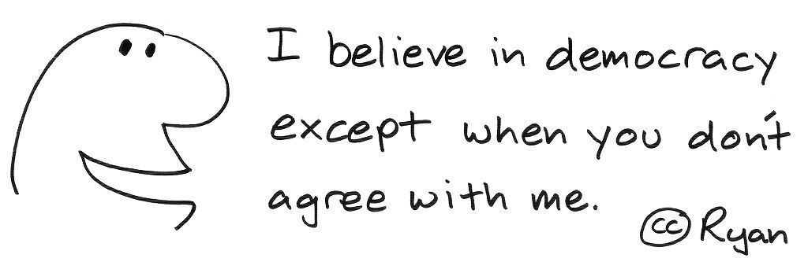
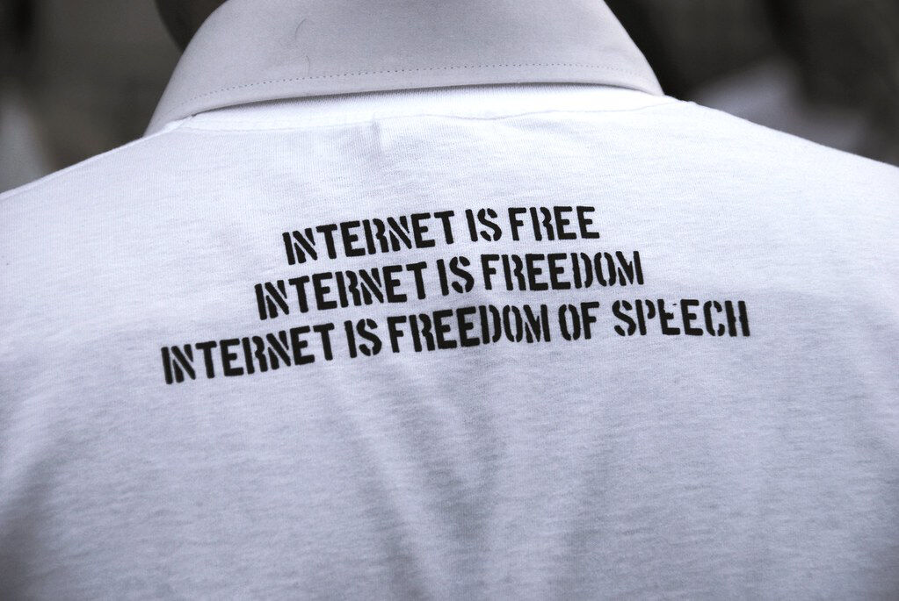

Trainees Edition
Trainers Edition
Trainees Edition
Trainers Edition
Module 10: Freedom of Expression
Module Description
The main purpose of this Module is to explain the freedom of expression and other related rights and their functions.
The secondary aim is to guide trainers who want to use the content of this Module to train their trainees.
With these aims, freedom of information along with guidelines about how to teach the subject are presented.
Trainees who successfully complete this Module will be able to:
- understand the definition and function of freedom of expression
- recognize different types of freedoms and their legal basis
- recognize the consequences of the lack of the basic freedoms
- understand the effects of changing media environment to freedom of expression
Additionally, trainers who successfully complete this Module, will be able to demonstrate an understanding of how to teach the freedom of information.
Module Structure
This Module consists of the following parts:
- Objective, Description of the Content and Learning Outcomes
- Structure of the Module
- Guidelines for Trainees
- Guidelines for Trainers (how to get prepared, methods to use and tips for trainers)
- Content (study materials)
- Quiz
- Resources (references and recommended sources and videos)
Main objectives of the Module, description of the content and the learning outcomes are explained in the Module Description part. Guidelines for Trainees includes instructions and suggestions for trainees. Guidelines for Trainers leads trainers through different phases of the training and provides tips which could be useful while teaching the subject. Content includes all study materials and the content related exercises. Quiz includes true/false questions for trainees to test their progress. Resources have two components: references and recommended sources for further reading and study. References is the list of sources cited in the content part. Recommended resources consist of a list of supplemental sources and videos which are highly recommended to read and watch for learning more on the topic.
Guidelines for Trainees
Trainees are expected to read the text and watch recommended videos. They can consult suggested resources for further information. After completing the study of the content trainees are strongly suggested to take the quiz to evaluate their progress. They can revise the study material if needed.
Guidelines for Trainers
Guidelines for trainers include suggestions and tips for trainers about how to use the content of this Module to train people on the subject.
Getting Prepared
Preparing a presentation (PowerPoint/Prezi/Canva) which is enriched with visual materials (images and video clips) and clear solid examples is strongly suggested. It is also suggested to adapt the examples and exercises in this Module to issues which are more familiar to the actual target group. Choosing local examples (country specific) regarding the current or well known issues help to illustrate a point more clearly. It also helps to draw the attention of trainees. The more familiar and popular the examples are, the better the message will be communicated.
Getting Started
A short quiz (3 to 5 questions) in Kahoot or questions with Mentimeter can be used at the beginning for engaging participants in the topic. It can be used as a motivation tool as well as a tool to check trainees’ existing knowledge about the subject. Some examples for questions could be: What is freedom of expression? What is freedom of information? Why are these rights important?
Methods to Use
Various teaching methods can be used in combination during the training. Such as:
- Lecturing
- Discussion
- Group work
- Self reflection
Tips for Trainers
Warming-up
An effective way of involving participants and setting common expectations about what they will learn is to ask a few preliminary questions on the subject. This can be done through group work by asking trainees to discuss and collect ideas, but also individually by asking each participant to write their ideas on sticky notes. The activity can be conducted as follows:
- Ask trainees what they think about the possible restrictions on social media.
- Invite trainees to define different concepts of freedoms, such as freedom of speech, thought or expression and ask their opinions about the functions of them.
Presenting the Objective of the Lesson
The objective of the lesson should be made clear (which is to explain the freedom of expression and other related rights and their functions). Following the warming-up questions it will be easier to clarify the objectives.
Presenting the Lesson Content
While presenting the content make sure to interact with the trainees and encourage them for active participation.
- Before providing a history for freedom of expression, ask trainees to think about themselves as citizens and encourage them to discuss if they feel free to speak about, for example political issues, in their country or society.
- When introducing the functions of freedoms in a democratic society, ask them if they think there is any need for restrictions on the internet.
Concluding
Make a short summary of the lesson and ask a couple of questions which help underlying the most important messages you would like to give.
Following question can help:
- Ask trainees how they would react when any restrictions applied to their social media accounts by the government.
When concluding, make sure that trainees understand that the freedoms are basic human rights but they should have some boundaries not to harm other people.
Content: Freedom of Expression
Introduction
Freedom of expression, which is an important fundamental right in itself, is also critical for defending and supporting other freedoms and rights such as freedom of thought and information. People utilise this right in daily life through the exchange of ideas, opinions and information. For this reason, it is very important for those who want to realise freedom of expression to understand the means and structures of communication and to organise environments that facilitate such exchange (Panday, n.d.).
Freedom of thought is the most important freedom according to Montesquieu, one of the democratic theorists. The qualities that make people human, such as creativity and virtuousness, only function and develop in a free environment. In environments where ideas can be freely expressed, democratic institutions continue to exist and have the opportunity to develop. A free person is a person who can think freely and express his/her opinions freely (Çelik & Tonta, 1996, p.1).
Freedom of expression is a principle right in modern societies and has a special importance for the well-functioning constitutional democracies. This freedom distinguishes open societies from closed ones, and liberals from authoritarian ones. However, the concept of freedom of expression includes much more than just the freedom to express one's opinion. It is generally accepted that freedom of thought, freedom of information and freedom of speech may be analysed under an umbrella “expression” standard (Hugelier, 2011, p. 61-62; Legal Information Institute, n.d.).
Among the sources first mentioned about the basic human rights such as freedom of expression, speech and information in history, it is seen that the following came to the fore:
- Swedish Legislation Freedom of the Press Act (1766): The Swedish Parliament passed legislation that is now recognized as the world’s first law supporting the freedom of the press and freedom of information. The law adopted the principle that the citizens of a state can express and disseminate information without fear of reprisal. This code has since become the milestone of democracies around the world (Cunningham, n.d.; Government Offices of Sweden, 2015).
- United States Constitution First Amendment (1791): “Congress shall make no law…abridging the freedom of speech, or the press” (Cunningham, n.d.).
- John Stuart Mill’s “On Liberty” (1859): The book emphasises the utility of free speech (Sorabji, 2021, p. 62-63).
- United States Constitution Fourteenth Amendment (1868): “Individuals in all the States equal individual rights to the ‘privileges and immunities’ of the first eight Amendments, including free speech” (Sorabji, 2021, p. 62-63).

"freedom of expression is your right" by rhinman is licensed under CC BY 2.0
Today, freedom of expression is a fundamental human right which has been recognised in the Universal Declaration of Human Rights (UDHR) by the United Nations in 1948. The Declaration was affirmed by the representatives of different countries of the United Nations General Assembly, which have different legal and cultural backgrounds from all over the world. The Declaration established for the first time fundamental human rights that must be universally protected and has been translated into more than 500 languages (United Nations, n.d.).
In Article 19 of UDHR this right mentioned as follows (United Nations, 1948):
“Everyone has the right to freedom of opinion and expression; this right includes freedom to hold opinions without interference and to seek, receive and impart information and ideas through any media and regardless of frontiers.”
Accordingly, International Covenant on Civil and Political Rights was adopted by the United Nations General Assembly and entered into force in 1976, where the freedom of speech act (Article 19) was updated as follows (UN General Assembly, 1966):
- Everyone shall have the right to hold opinions without interference.
- Everyone shall have the right to freedom of expression; this right shall include freedom to seek, receive and impart information and ideas of all kinds, regardless of frontiers, either orally, in writing or in print, in the form of art, or through any other media of his choice.
- The exercise of the rights provided for in paragraph 2 of this article carries with it special duties and responsibilities. It may therefore be subject to certain restrictions, but these shall only be such as are provided by law and are necessary:
- For respect of the rights or reputations of others;
- For the protection of national security or of public order (ordre public), or of public health or morals.
Freedom of expression is also recognised as a human right in Article 10 of European
Convention on Human Rights in 1952. The article has the following statement (Council of Europe, 1952):
“Everyone has the right to freedom of expression. This right shall include freedom to hold opinions and to receive and impart information and ideas without interference by public authority and regardless of frontiers. This article shall not prevent States from requiring the licensing of broadcasting, television or cinema enterprises.”
The “freedom” stated in these articles includes not only the right of a person to express his/her opinion (in other words “freedom of speech”), but also the right to receive and transmit information and ideas. On the other hand, these articles place an emphasis on ideas rather than information (Hugelier, 2011, p. 64).
There are some arguments (especially in terms of different political and philosophical perspectives) on what the limits of freedom covered under "freedom of expression" should be. According to some opinions, any expression should be free as long as it does not turn into a physical act, while according to others, expressions that may be an element of psychological pressure (such as hate speech, pornography) should be considered outside the boundaries of the concept of freedom (van Mill, 2021). The Article 10 of the European Convention of Human Rights states these restrictions as follows (Council of Europe, 1952):
“The exercise of these freedoms, since it carries with it duties and responsibilities, may be subject to such formalities, conditions, restrictions or penalties as are prescribed by law and are necessary in a democratic society, in the interests of national security, territorial integrity or public safety, for the prevention of disorder or crime, for the protection of health or morals, for the protection of the reputation or rights of others, for preventing the disclosure of information received in confidence, or for maintaining the authority and impartiality of the judiciary.”
New Media Ecosystem and Freedom of Information
Hearing other people's opinions can help learning if they are right, and revealing the truth more clearly if they are wrong. In other words, an individual who is fed with different thoughts better develops his/her own mindset (Sorabji, 2021, p. 64-65). The media has a fundamental role as a "public watchdog" since their main duty is to form a basis to express opinions, ideas and to give and receive information as long as it is in the public interest. Freedom of information, as well as freedom of expression, is of vital importance for the existence of a free press. Therefore, there is an unquestionable link between freedom of expression and freedom of information (Hugelier, 2011, p.63).
A free person is a person who can think and express his/her opinions freely. The prerequisite for this is the right to access accurate, undistorted information, which is called freedom of information. It is seen that in countries where this right is insufficient, public opinion is not formed properly, and non-democratic regimes use mass media to impose untrue situations on their own people. This is why the basic premise of the concept of freedom of thought in a democracy is the right of citizens to access information (Çelik & Tonta, 1996, p.1).
“Seeking information is essential for finding the truth, which is in turn essential for collective decision-making in a democratic society.”
(Hugelier, 2011, p. 64)
Today's contemporary societies use their freedom of information widely through the media. Therefore, it is in the public interest to support the freedom of the press and being able to learn and disseminate all kinds of news through mass media has been recognized as a right with the Universal Declaration of Human Rights, the European Convention on Human Rights and the Helsinki Final Act, regardless of country borders (Çelik & Tonta, 1996, p.1). The international organisation of Reporters Without Borders (RSF), which cares about the equal enjoyment of these rights by humanity, monitors the conditions of journalists around the world for this purpose and ranks countries annually according to their degree of media freedom (Reporters Without Borders, 2021).

"Selective democracy" by ryan2point0 is licensed under CC BY-NC-ND 2.0
All different voices and opinions deserve to be heard fairly, not only in the name of freedom of speech and expression, but also to give people access to a variety of information (Pickard, 2020). In the digital age, communication has evolved from personal emails or static web browsing to a more interactive, sharing-oriented global phenomenon that is rapidly reaching large audiences and has an extremely wide scope. This radical change, especially created by social media, has also led to the evolution of the internet. The proliferation of digital technologies has not only encouraged access to unlimited information, but also created a diverse ecosystem of voice, image, text and code, accessible from various types of media and using different types of technologies (Panday, n.d.).
As a result of this evolution, the amount of information that can be accessed has increased, some possible barriers to access information (such as time and space limitations) have disappeared, and this has made communication more democratic. In this way, internet users have become able to take on the role of writer, publisher or broadcaster on the internet, bypassing the gatekeepers in the traditional media ecosystem, thus opening up unlimited possibilities for producing, sharing and exchanging all kinds of content. From this point of view, the internet has emerged as a globally accessible communication tool, free from traditional restrictions on freedom of speech and expression. However, the internet has started to become more and more controversial, as the number of online content increased, the reliability of this content became questionable and people were trapped in similar voices by the effect of algorithms. As a result, the debates challenging the free flow of information and freedom of expression have intensified today. In other words, there are unintended consequences where different forms of power and control are discussed, including the regulation of content shared on the Internet (Panday, n.d.).
Internet and Freedoms
The emergence of the Internet had a groundbreaking effect on the expression of ideas and changed some fundamental aspects, which will be summarised below (Zeno-Zencovich, 2008, p. 100-112):
- Freedom of expression as an individual freedom: While the traditional media remained dominant, a new model emerged in which individuals had the opportunity to disseminate their ideas independently.
- Loss of the intermediary role of the media: In the internet environment, attention has shifted to the expression of ideas of individuals, which has significantly changed the traditional role of mass media. Traditional media outlets not only lost their monopoly on the dissemination of ideas, but above all they also ceased to be a privileged source of information.
- Data vs. information: The focus is displaced from freedom of expression to freedom to communicate and disseminate data, in other words, the freedom to inform.
- Changing communicating habits: The internet has a different logic and semantics than traditional media outlets and creates a new or different experience for its users. This also affects the way ideas are expressed.
- Business activity on the internet: Processes and methods of several industries have changed and new ones have occurred by the proliferation of the internet. The aim of these systems should be to ensure the responsible collection, processing and dissemination of information in a society.
- Trans-nationality: Internet-based communications and websites are, by their nature, available and accessible all over the world, and their content cannot be restricted by the rules of individual legal systems.

"internet is freedom of speech" by BEE FREE - PGrandicelli [the social bee] is licensed under CC BY-NC-SA 2.0
Although the Internet has prepared a ground for freedom and democracy that humanity has not encountered before, the limits of freedoms here are also a matter of debate. In this environment, where people are publishers, writers, information producers and spreaders without intermediaries, harmful, false or deliberately manipulative or biassed information can also be disseminated. This may be a big problem, for example if personal profiles based on free speech are used to target voters. It is possible to list some of the problematic information spread by the Internet, especially by social media (Sorabji, 2021, p. 112-133):
- Companies deriving improper benefits over people's personal data: The use of personal profiles derived from people’s footprints on social media for targeting individuals with advertisements and political propaganda (this includes the sharing of this data with third party companies).
- Spreading disinformation or malinformation to manipulate people’s opinions and decisions or to give harm to them.
- Jeopardising the democratic vote: Unregulated data-broking companies drive personality profiles from personal data shared on the internet to make propaganda for a certain political party or opinion.
- Echo chambers: One of the negative results of targeting different content to different audiences on the basis of different profiles. In echo chambers, people hear their own opinions rather than learning the truth which matters especially when the content is political.
- Selling advertising spaces to extremist politicians or sensational websites: Social media companies prefer more-widely-read sensational or extremist content for the ad space they sell. As these contents are read more, social media companies earn more.
- Difficulties for social media in removing content when it becomes too extremist: There are generally not enough human editors to deal with the problem. Editing such contents usually needs moral understanding.
- Effects on public life and on mental and physical health: Especially younger generations worry about whether their own self-portraits on social media will match with their peers, or whether their peers will bother to answer their messages. More serious health hazards may arise when exposed to a post that promotes self-harm or suicide.
As mentioned in previous titles, the essence of freedom of expression or speech is to reveal the truth and to learn from others. But in such a social media environment where selling data or creating personal profiles from that data is more valuable than truth, these basic human rights are not really applicable (Sorabji, 2021, p. 133).
On the other hand, not all collection of personal data is illegitimate. For example, a major online e-commerce company may offer new products by looking at one's personal data and preferences. Here, the red line may be selling the data to other companies or, as mentioned in previous titles, using this data to cause harm to people (Sorabji, 2021, p. 122).
To share information or to create personal profiles on the internet is not necessarily a harmful action. The important thing here is to be aware of possible manipulations and to act responsibly when using the internet, just like when living in society in daily life, knowing that we do not have unlimited freedom (Sorabji, 2021, p. 172). Education programs such as media or news literacy are some of the solid solutions on raising such an awareness in the public.
Quiz
References
Council of Europe. (1952). The European Convention on Human Rights. Strasbourg: Directorate of Information. Retrieved from https://www.echr.coe.int/documents/convention_eng.pdf.
Cunningham, J. M. (n.d.). A Brief History of Press Freedom. Encyclopedia Britannica. Retrieved from https://www.britannica.com/story/250-years-of-press-freedom.
Çelik, A. & Tonta, Y. (1996). Düşünce özgürlüğü, bilgi edinme özgürlüğü ve bilgi hizmetleri. In Tonta, Y. & Çelik, A. (Eds.). Bilgi Edinme Özgürlüğü (Freedom of Information), (pp. 1-13). Ankara: Türk Kütüphaneciler Derneği, 1996.
Government Offices of Sweden. (2015, May 17). The Constitution of Sweden. Retrieved from https://www.government.se/information-material/2013/08/the-constitution-of-sweden/.
Hugelier, S. (2011). Freedom of expression and transparency: Two sides of one coin. Jura Falconis, 47(1), 61–91.
Legal Information Institute. (n.d.). Freedom of Expression - Speech and Press. Retrieved from https://www.law.cornell.edu/constitution-conan/amendment-1/freedom-of-expression-speech-and-press.
Panday, J. (n.d.). Freedom of Expression in a Digital Age: Effective Research, Policy Formation & the Development of Regulatory Frameworks in South Asia. Retrieved from https://cis-india.org/internet-governance/events/freedom-of-expression-in-digital-age.
Pickard, V. (2020). Democracy Without Journalism? Confronting the Misinformation Society. New York: Oxford University Press.
Reporters Without Borders. (2021). World Press Freedom Index - 2021. Retrieved from https://rsf.org/en/ranking.
Sorabji, R. (2021). Freedom of Speech and Expression: Its History, its Value, its Good Use, and its Misuse. New York: Oxford University Press.
UN General Assembly. (1966, December 16). International Covenant on Civil and Political Rights. Retrieved from https://www.ohchr.org/en/professionalinterest/pages/ccpr.aspx.
United Nations. (1948). Universal Declaration of Human Rights. Retrieved from https://www.un.org/sites/un2.un.org/files/udhr.pdf.
United Nations (n.d.). Universal Declaration of Human Rights. Retrieved from https://www.un.org/en/about-us/universal-declaration-of-human-rights.
van Mill, D. (2021). Freedom of speech. The Stanford Encyclopedia of Philosophy (Spring 2021 Edition), Zalta, E.N. (Ed.). Retrieved from https://plato.stanford.edu/archives/fall2016/entries/freedom-speech/#Aca.
Zeno-Zencovich, V. (2008). Freedom of expression: A critical and comparative analysis. New York: Routledge-Cavendish.
Recommended Sources
Cunningham, J. M. (n.d.). A Brief History of Press Freedom. Encyclopedia Britannica. Retrieved from https://www.britannica.com/story/250-years-of-press-freedom.
McDonald, A. (2015, November 5). Freedom of information. Encyclopedia Britannica. https://www.britannica.com/topic/freedom-of-information.
UNESCO. (n.d.). Freedom of Expression: A Fundamental Human Right Underpinning all Civil Liberties. https://en.unesco.org/70years/freedom_of_expression.
Weibull, L. (2020, November 25). Freedom of the Press Act of 1766. Encyclopedia Britannica. https://www.britannica.com/topic/Freedom-of-the-Press-Act-of-1766.
Recommended Videos
Langton, R. (2015). What is the Point of Free Speech? https://www.youtube.com/watch?v=7vMiiMLrZuo.
Crash Course. ()2015. Freedom of the Press: Crash Course Government and Politics #26. https://www.youtube.com/channel/UCX6b17PVsYBQ0ip5gyeme-Q.